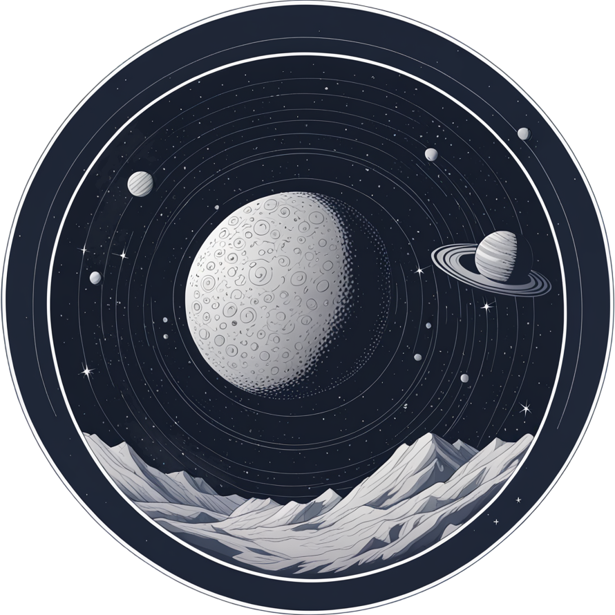

<ion-toolbar class="header">
  <ion-avatar slot="start" (click)="regresarInicio()">
    
  </ion-avatar>
  <p>FLOVERS PLANET</p>
  <ion-avatar slot="end" id="perfilImagenProyectada">
    
  </ion-avatar>
  <ion-popover trigger="perfilImagenProyectada" size="auto">
    <ng-template>
      <ion-content>
        <ion-list>
          <ion-item [button]="true" [detail]="false" (click)="irPerfil()">Perfil</ion-item>
          <ion-item [button]="true" [detail]="false" id="cerrarSesion" (click)="alertCerrarSesion()">Cerrar Sesion</ion-item>
        </ion-list>
      </ion-content>
    </ng-template>
  </ion-popover>
</ion-toolbar>

<ion-header class="menu">
  <ion-toolbar>
    <div id="listaMenu">
      <p id="temarioImagenProyectada">Temario</p>
      <ion-popover trigger="temarioImagenProyectada" size="auto">
        <ng-template>
          <ion-content>
            <ion-list>
              <ion-item [button]="true" [detail]="false" (click)="navegar('Sistema-Solar')">Sistema Solar</ion-item>
              <ion-item [button]="true" [detail]="false" (click)="navegar('Constelaciones')">Constelaciones</ion-item>
            </ion-list>
          </ion-content>
        </ng-template>
      </ion-popover>
      <p (click)="navegar('Articulos')">Articulos</p>
      <p (click)="navegar('Foro')">Foro</p>
      <p (click)="navegar('Galeria')">Galeria</p>
      <p (click)="navegar('Guias')">Guias</p>
      <p (click)="navegar('Noticias')">Noticias</p>
      <p (click)="navegar('Calendario')">Calendario</p>
    </div>
  </ion-toolbar>
</ion-header>